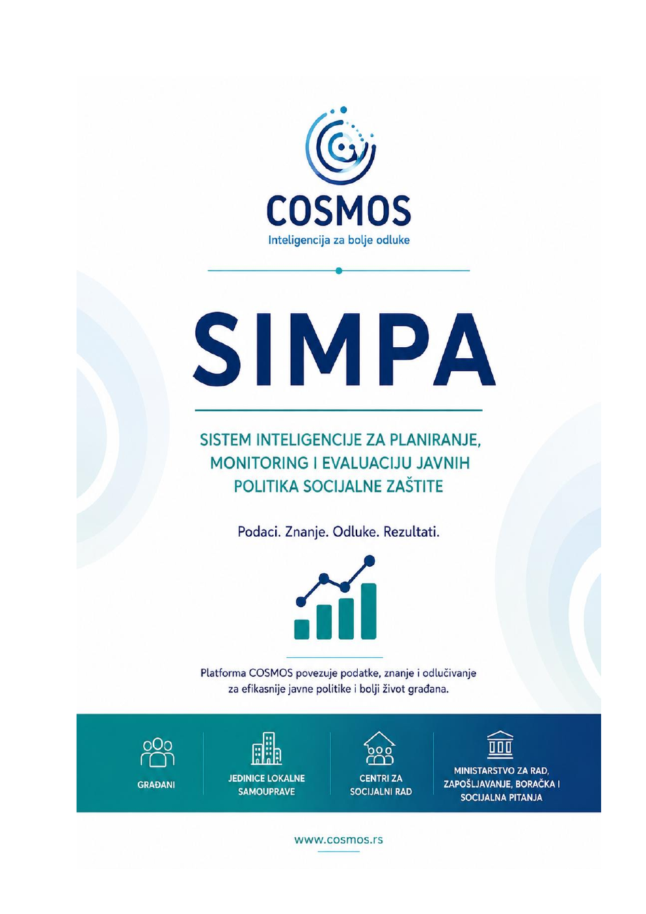

Građani
Dostupnije i kvalitetnije usluge
Podrška se planira prema stvarnim potrebama i rizicima lokalne zajednice.

Podaci. Znanje. Odluke. Rezultati.
Sistem inteligencije za planiranje, monitoring i evaluaciju javnih politika socijalne zaštite. Vizuelno pripada COSMOS platformi, ali dobija sopstvenu navy–teal akcentnu paletu.

SIMPA povezuje podatke iz različitih izvora i pretvara ih u pokazatelje, procene i scenarije koji podržavaju planiranje usluga, preventivno delovanje, kvalitetnije javne politike i efikasnije korišćenje resursa.
Podrška se planira prema stvarnim potrebama i rizicima lokalne zajednice.
Podaci postaju osnova za analizu, planiranje intervencija i praćenje rezultata.
Razvoj usluga i budžeta oslanja se na uporedive pokazatelje i potrebe građana.
Uporedivi pokazatelji podržavaju praćenje razvoja i procenu efekata javnih politika.
Vizuelni primer kako SIMPA metodologiju predstaviti na landing stranici: šest jasnih faza, kratke poruke, bez grafikona, simulacija i lažne funkcionalnosti.
Podaci iz svakodnevnog rada i relevantnih lokalnih sistema.
Validacija, povezivanje i jedinstveni metodološki okvir.
Trendovi, indeksi, geografske i uporedne analize.
Procena budućih potreba, rizika i mogućih scenarija.
Poređenje alternativa, prioritizacija i procena efekata.
Odluke zasnovane na dokazima i povratna informacija u sistem.
SIMPA prikaz ne treba da izgleda kao „AI igračka“. Vizuelni jezik mora da sugeriše kontrolisan pristup, agregaciju, sledljivost i etičku primenu analitičkih modela kao podršku stručnom radu.
Pristup podacima mora biti vezan za ovlašćenja, uz revizijski trag i odgovornost za način njihove upotrebe.
Modeli pružaju dodatne uvide, procene i scenarije; profesionalna procena ostaje osnova odluke.